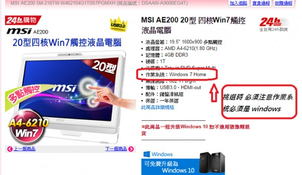

主機購買
【Acer】DA222HQL 22型 智慧型觸控 平板 All In One電腦
acer DA222 HQL詳細規格表
螢幕尺寸
21.5吋寬VA 面板16:9顯示
處理器
NVIDIA T33 Quad-core ARM 1.6GHz 四核心
記憶體
1GB LPDDR2 (POP type) 隨機存取記憶體
16GB eMMC快閃記憶體作為儲存空間
1個microSD 記憶卡插槽，最高支援 32GB
作業系統
Android Jelly Bean 4.2.2
webcam
2M Fix-focus
網路介面
802.11 a/b/g/n, Bluetooth3.0, 10/100Mbps
連接埠及擴充槽
VGA(D-Sub) x1
MHL x1
USB2.0(1up 2down)
SD card (Max 32G)
Audio line-in & Audio out
解析度
1920 x 1080 FullHD 1080P超高解析度
支援色彩
16.7 Million
亮度
250 cd/m2 (正常工作時)
對比
1000:1 真實對比
10000萬:1高動態對比
點距
0.248
可視角度
178 ° (水平) / 178 ° (垂直)
總體訊號反應時間 (毫秒)
12 ms
訊號輸入模式
Micro HDMI
喇叭
2W x 2
VESA 壁掛
100x100mm
電源
AC 100 - 240V
1 個回答
您好
這款不支援 因為作業系統是 Android
先用POS目前只支援作業系統是 windows 的電腦
